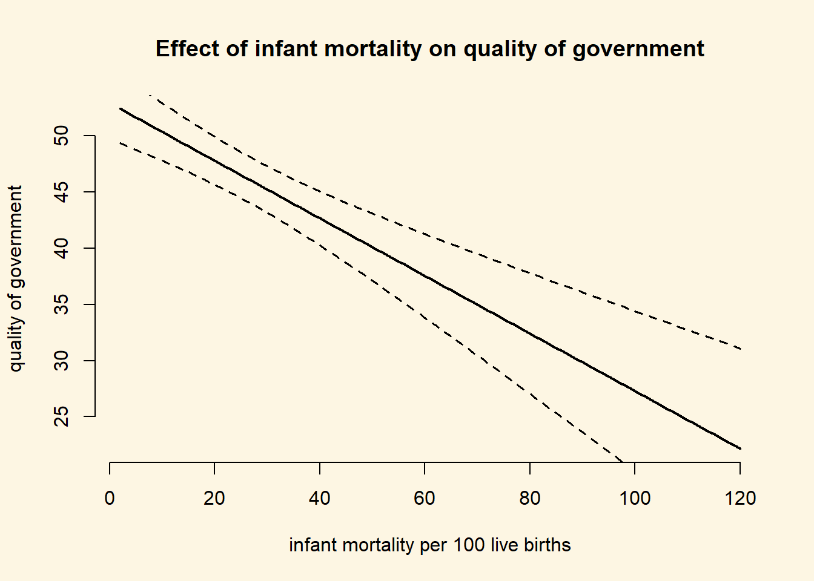

7.2 Solutions
library(texreg)7.2.0.1 Exercise 2
You can download the data and load from your local disk but since it is available online, we download it directly from the Quality of Government Institute website.
df <- read.csv("http://www.qogdata.pol.gu.se/data/qog_std_cs_jan17.csv", header = TRUE)7.2.0.2 Exercise 3
Pretend that you are writing a research paper. Select one dependent variable that you want to explain with a statistical model.
We are interested in explaining the quality of government idicator, where larger values indicate better overall governance. Before we go on to check what predicts better governance, we will take a look at the variable and remove NA’s. We will also rename the variable.
# rename
names(df)[which(names(df) == "icrg_qog")] <- "gov_quality"
# look at DV
summary(df$gov_quality) # 55 NA's Min. 1st Qu. Median Mean 3rd Qu. Max. NA's
0.08333 0.38889 0.47222 0.52540 0.63194 0.97222 55 # create a copy of full dataset
df.full <- df
# drop NA's
df <- df[ !is.na(df$gov_quality), ]The range of the quality of government variable is 0 to 1. We will re-scale to 0 - 100 to make results easier to interpret.
df$gov_quality <- df$gov_quality * 1007.2.0.3 Exercise 4
From Putnam’s “bowling alone”, we know of the theory of the importance of social capital for successful democratic governance. We, therefore, choose the social capital indicator bti_sc, where larger values stand for more social capital. We expect better governance in countries where social capital is higher. Before we estimate the model, we look at the variable, remove missings, and rename it.
# look at IV
summary(df$bti_sc) Min. 1st Qu. Median Mean 3rd Qu. Max. NA's
1.000 4.000 5.000 5.324 6.000 9.000 34 # remove NA's
df <- df[ !is.na(df$bti_sc), ]
# rename
names(df)[which(names(df) == "bti_sc")] <- "social_capital"Our sample size is down to 105 countries. This is still a decent sample size. However, we would like to avoid loosing many more observations. Smaller sample sizes are a danger to inference (through increased variance - effects are less likely to be discovered and if they are, they are more likely to be over-estimates).
# linear model
m1 <- lm(gov_quality ~ social_capital, data = df)
screenreg(m1)
==========================
Model 1
--------------------------
(Intercept) 24.68 ***
(4.02)
social_capital 3.73 ***
(0.72)
--------------------------
R^2 0.21
Adj. R^2 0.20
Num. obs. 105
RMSE 12.41
==========================
*** p < 0.001, ** p < 0.01, * p < 0.05Firstly, the intercept is not meaningful in this case because social capital ranges from 1 to 9, i.e. there is no country with 0 social capital.
The coefficient of social capital is positive and significant. Dividing the estimate by the standard error yields the t value which is 5.2. At a conventional alpha level of 0.05, we reject the null hypothesis when t is more extreme than \(\pm\) 1.96. This is the case here. In line with our expectation, more social capital increases the quality of governance on average by 3.73 points (on a 0 - 100 scale).
Increasing social capital by one point of its scale is a substantial amount (1/9 or 11\(\%\) of its range). So, if social capital increases by a substantial amount, does governance also go up by a substantial amount? A 3.73 point change on a 0-100 scale is 3.73/101 or 4\(\%\). That is still a substantial change considering that we are measuring how well governed an entire country is.
7.2.0.4 Exercise 5
Add some additional explanatory variables (no more than 5) to your model and justify the choice again.
We have not talked about this in the lecture before and it will not be a hurdle in the midterm. However, it is important that you keep an eye on sample size. If the sample size becomes too small it is unlikely that you can make meaningful statements about the world. We, therefore, selected variables with an eye on the missing values and their theoretical importance. If you see studies that are based on small samples, be suspicious.
Firstly, we used infant mortality as a general indicator for development in the sense that basic health can be provided. We expect that if health conditions get worse than that should affect the capacity to govern negatively because it points to a basic lack of resources. We include a variable that measures conflict intensity. Violent conflict seriously, impedes the ability to govern. Finally, we added an index for the freedom of the press. The press is often considered to be the forth column in a state (besides the legislative, executive, and judicial branches). The function is to check the government. A role, that can be best fulfilled by a free press. This will lead to a more accountable government which we conjecture increases the quality of government.
We rename the variables and drop missing values on them.
Note: To make models comparable, they should be based on the same sample. So, after we dropped missing values, we have to re-run our bivariate model as well.
# renaming
names(df)[which(names(df)=="wef_imort")] <- "infant_mortality"
names(df)[which(names(df)=="fh_fotpsc")] <- "press_freedom"
names(df)[which(names(df)=="bti_ci")] <- "conflict_intensity"
summary(df$infant_mortality) # infant mortality Min. 1st Qu. Median Mean 3rd Qu. Max. NA's
2.00 9.30 17.30 27.73 42.80 119.20 12 summary(df$press_freedom) # freedom of the press index Min. 1st Qu. Median Mean 3rd Qu. Max.
16.00 41.00 57.00 55.57 68.00 97.00 summary(df$conflict_intensity) # conflict intensity Min. 1st Qu. Median Mean 3rd Qu. Max.
1.000 3.000 4.000 4.762 6.000 10.000 # drop missings
df <- df[ !is.na(df$infant_mortality) ,]
# re-run model 1 with new sample and check differences
m1.rerun <- lm(gov_quality ~ social_capital, data = df)
screenreg( list(m1, m1.rerun) )
=====================================
Model 1 Model 2
-------------------------------------
(Intercept) 24.68 *** 30.11 ***
(4.02) (4.52)
social_capital 3.73 *** 2.93 ***
(0.72) (0.79)
-------------------------------------
R^2 0.21 0.13
Adj. R^2 0.20 0.12
Num. obs. 105 93
RMSE 12.41 12.03
=====================================
*** p < 0.001, ** p < 0.01, * p < 0.05As you can see, the difference is not small. This is less than ideal. R^2 goes down by alot and the magnitude of social capital also changes. There is not much you can do (without advanced stats) except being transparent about the differences.
# add new control variables
m2 <- lm(gov_quality ~ social_capital + infant_mortality + press_freedom + conflict_intensity, data = df )
screenreg(list(m1.rerun, m2))
=========================================
Model 1 Model 2
-----------------------------------------
(Intercept) 30.11 *** 64.29 ***
(4.52) (12.74)
social_capital 2.93 *** -0.08
(0.79) (1.27)
infant_mortality -0.23 ***
(0.05)
press_freedom -0.10
(0.10)
conflict_intensity -1.29
(0.66)
-----------------------------------------
R^2 0.13 0.39
Adj. R^2 0.12 0.37
Num. obs. 93 93
RMSE 12.03 10.21
=========================================
*** p < 0.001, ** p < 0.01, * p < 0.057.2.0.5 Exercise 6
Carry out the F-test to check whether the new model explains more than the old model.
# f-test
anova(m1.rerun, m2) Analysis of Variance Table
Model 1: gov_quality ~ social_capital
Model 2: gov_quality ~ social_capital + infant_mortality + press_freedom +
conflict_intensity
Res.Df RSS Df Sum of Sq F Pr(>F)
1 91 13170
2 88 9169 3 4000.9 12.8 0.0000005133 ***
---
Signif. codes: 0 '***' 0.001 '**' 0.01 '*' 0.05 '.' 0.1 ' ' 1As we saw by comparing R^2, the bigger model explains a lot more variance in the quality of government. The f-test shows that this difference is not due to chance. The p value is smaller than 0.05, hence, we reject the null that the small model and the larger model really explain the same. Another way to put this is: the variables we have added are jointly significant.
7.2.0.6 Exercise 7
Produce a regression table of the better model.
htmlreg(m2, file = "regression_quality_of_government.doc")The table was written to the file 'regression_quality_of_government.doc'.7.2.0.7 Exercise 8
Interpret the output of the better model. State your expectations and whether they were met.
screenreg( list(m1.rerun, m2))
=========================================
Model 1 Model 2
-----------------------------------------
(Intercept) 30.11 *** 64.29 ***
(4.52) (12.74)
social_capital 2.93 *** -0.08
(0.79) (1.27)
infant_mortality -0.23 ***
(0.05)
press_freedom -0.10
(0.10)
conflict_intensity -1.29
(0.66)
-----------------------------------------
R^2 0.13 0.39
Adj. R^2 0.12 0.37
Num. obs. 93 93
RMSE 12.03 10.21
=========================================
*** p < 0.001, ** p < 0.01, * p < 0.05Our re-run bivariate model explains 13\(\%\) of the variance of the quality of government. This is not bad for a small model. By adding our three variables, we increased explained variance to 40\(\%\) which is a large increase. Our new model seems to explain quality of government much better than the smaller model.
The intercept is not meaningful in either model. The coefficient of social capital is no longer significant (its standard error is larger in absolute terms than the coefficient estimate). We, therefore, do find evidence for the effect of social capital when we control basic health, press freedom, and conflict intensity also. Neither press freedom nor conflict intensity reach conventional levels of significance (both coefficients are less than 1.96 standard deviations away from zero). We find that the worth the health conditions, the less well governed a country will be. Infant mortality is measured in deaths/ 1000 live births. If that proportion increases by 10, the government index decreases by 2.3 which corresponds to roughly 2\(\%\) of its range.
7.2.0.8 Exercise 9
Calculate fitted values whilst varying at least one of your continuous explanatory variables.
We only have one significant variable. It does not make sense to vary insignificant variables because, we cannot reject the null that their effect is zero. We vary infant mortality from minimum to maximum.
# see minimum and maximum of infant mortality
summary(df$infant_mortality) Min. 1st Qu. Median Mean 3rd Qu. Max.
2.00 9.30 17.30 27.73 42.80 119.20 # set our covariates
covariates <- data.frame(
social_capital = mean(df$social_capital),
infant_mortality = seq(from = 2, to = 120, by = 1),
press_freedom = mean(df$press_freedom),
conflict_intensity = mean(df$conflict_intensity)
)
# check that everything looks okay
head(covariates) # looks fine social_capital infant_mortality press_freedom conflict_intensity
1 5.473118 2 53.92473 4.612903
2 5.473118 3 53.92473 4.612903
3 5.473118 4 53.92473 4.612903
4 5.473118 5 53.92473 4.612903
5 5.473118 6 53.92473 4.612903
6 5.473118 7 53.92473 4.612903# calculate fitted values using predict()
fitted.vals <- predict(m2, newdata = covariates)
# attch the fitted values to our covariates data
covariates$fitted.vals <- fitted.vals
# hooray, for each scenario a predicted outcome
head(covariates) social_capital infant_mortality press_freedom conflict_intensity
1 5.473118 2 53.92473 4.612903
2 5.473118 3 53.92473 4.612903
3 5.473118 4 53.92473 4.612903
4 5.473118 5 53.92473 4.612903
5 5.473118 6 53.92473 4.612903
6 5.473118 7 53.92473 4.612903
fitted.vals
1 52.19227
2 51.95759
3 51.72292
4 51.48825
5 51.25358
6 51.018917.2.0.9 Exercise 10
Plot the result.
plot(
y = covariates$fitted.vals,
x = covariates$infant_mortality,
frame.plot = FALSE,
main = "Effect of infant mortality on quality of government",
ylab = "quality of government",
xlab = "infant mortality per 100 live births",
type = "l",
lwd = 2
)7.2.0.10 Exercise 11
Interpret the plot.
We interpret the simple plot including just the rgression line. It illustrates the strong negative relation between infant mortality, our proxy for basic health and resource conditions, and the quality of government generally. At 20 deaths per 1000 live births, we predict quality of government at roughly 48. At 100 deaths per 1000 live births, quality of government is predicted to be at roughly 33 only. Therefore, quality of government decreased by 31\(\%\) (\(\frac{48-33}{48}\)), a substantial amount.
7.2.0.11 Extra Info (not relevant for midterm)
Below, we will show you how you could illustrate the confidence interval around the prediction. This is not necessary for the midterm but usefule to know. We can set the option se.fit = TRUE which will return standard errors for the prediction as well.
prediction.with.se <- predict(m2, newdata = covariates, se.fit = TRUE)We can extract the standard error with the dollar sign and add them to our covariates dataset.
covariates$se.of.y <- prediction.with.se$se.fitNow, we can draw confidence intervals.
plot(
y = covariates$fitted.vals,
x= covariates$infant_mortality,
frame.plot = FALSE,
main = "Effect of infant mortality on quality of government",
ylab = "quality of government",
xlab = "infant mortality per 100 live births",
type = "l",
lwd = 2
)
# add lines for confidence intervals
# upper bound
lines(x = covariates$infant_mortality, y = covariates$fitted.vals + 1.96 * covariates$se.of.y,
lty = "dashed", lwd = 1.5)
# lower bound
lines(x = covariates$infant_mortality, y = covariates$fitted.vals - 1.96 * covariates$se.of.y,
lty = "dashed", lwd = 1.5)
This was purely for your enjoyment and you won’t be tested on it. It just illustrates the uncertainty of the predictions.